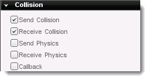
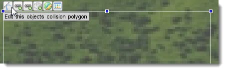
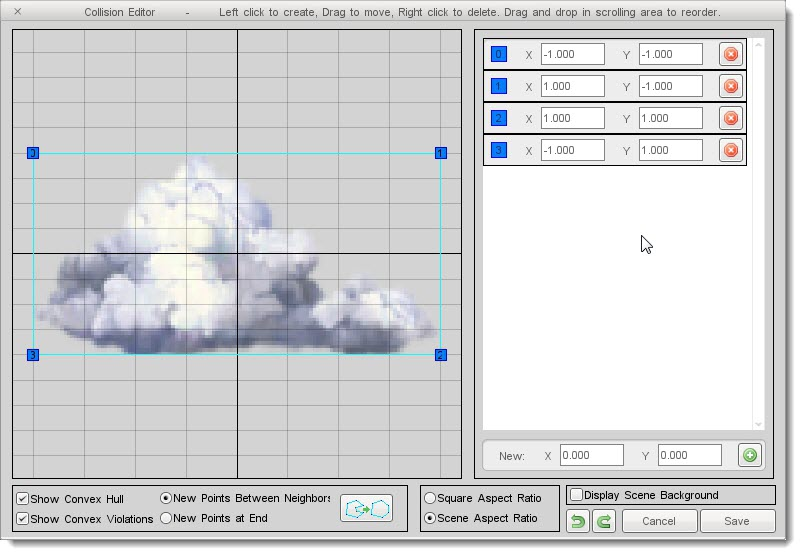
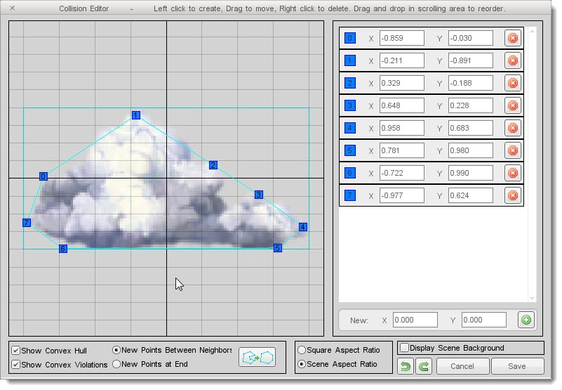

Introduction
In this tutorial, you will be shown how to enable collisions and set
up responses using Torque 2D. Whenever you need two or more objects to
collide with each other and react in an appropriate manner, you will
need to use the information in this guide. This can range from stopping a
moving object, bouncing objects off of each other and creating custom
functions based on collision types. The following topics are covered in
this tutorial:
Basic Collision
Torque 2D uses a proprietary physics and collision system. While not
as feature rich as Box2D, it can still support your game's collision
needs. You can get basic box to box collision running with only a couple
mouse clicks.
Enabling Collision
By default, collision is disabled for a new object when you add it to
a scene. This is an optimization, since not every sprite in your scene
needs collision (like a backdrop). To enable collision, start by
clicking on the an object in the scene. Switch to the Edit tab, then
scroll down to the Collision rollout. Click the top two check boxes to
enable Send Collision and Receive Collision:

Collision Properties
With the exception of scripting, you will control the functionality
of your object's collision via the Collision rollout. The full set of
properties are shown below:
(click to enlarge)

- Send Collision: When toggled, this will tell other objects it has collided with them.
- Receive Collision: When toggle, this object will receive notification of collision with other objects.
- Send Physics: Determines whether the object's default physics response will be used when it is sending the collision.
- Receive Physics: Determines whether or not the object's default physics response will be used when it is receiving the collision.
- Callback: When enabled, a script callback named onCollision will be triggered when this object collides with another.
- Detection Mode: Changes the algorithm used for collision detection
- Full: Swept circle combined with polygon detection. The circle is generated dynamically based on the original bounding box size
- Circle: Swept circle only
- Polygon: Polygon detection (can be modified using the Collision Editor)
- Custom: Allows for custom collision calculation.
Currently this does nothing, but you can implement your code in the the
blank function found in t2dSceneObject.cc. This function is named t2dSceneObject::onCustomCollisionDetection
- Circle Scale: Controls the size of the collision circle when using the Full and Circle detection modes.
- Superscribe Ellipse: When enabled, the circle used in
FULL mode collision will automatically scale to a size that covers the
entire polygon at each point.
- Collision Response: Contains a set of default behaviors an object will perform when collision occurs.
- BOUNCE: A simple, pong-style bouncing effect. The
colliding object will reverse its velocity in both the X and Y directions,
essentially reversing its motion.
- CLAMP: The colliding object slides along the surface it hits.
- STICKY: The colliding object will stop completely.
- KILL: The colliding object will be deleted immediately.
- RIGID: The colliding object will react using built-in rigid body physics.
- Collision Layers: Controls which layers this object will
collide with. By default, an object collides with all layers. If layer 0
is turned off, this object will not collide with any objects in that
layer.
- Collision Groups: Similar to Collision Layers, except
this is a manual organization of collision not reliant on any scene
properties (like layers). This can work in conjunction with Collision
Layers. For example, you can disable collision with everything except
objects that exist on layer 3, layer 4 and are only in group 2. This
becomes very important when you have many types of objects on screen
moving at once.
Advanced Collision
In addition to the basic collision properties described previously,
you can extend your object's collision functionality using the Collision
Editor, messages and script callbacks.
Collision Editor
When you have an object selected in the scene, it is outlined by a
box. This is called the bounding box, which is used as the object's
default collision shape. Not every sprite you add to your scene actually
uses that entire space. Many sprites you will be adding likely have
abnormal shapes, such as a walking human, spaceship, flower, etc. A
simple box to box collision is not always ideal.
This is easily fixed by using the Collision Editor. While custom shapes
can consume more processor power, your game play will be more believable
and intuitive. Start by selecting an object in the scene, then click on
the first button on the left end of the Selection Editor Toolbar:

Clicking that button will activate the Collision Editor. At first, the
four points you see are identical to the sprite's bounding box. You can start adding nodes to the box to create a custom shape that more closely resembles the art's shape. The main limitation to this feature is that shapes must be convex, meaning they have no inward facing angles:
BEFORE:
(click to enlarge)

AFTER:
(click to enlarge)

Collision and Physics Messages
The four check boxes at the top of an object's collision properties
define the object's participation in the collision system using these
properties individually. For example, turning Send Collision on but
leaving Receive off will result in some objects never responding to
collision.
Objects that have "Send Collision" active can be thought of as active
colliders, while objects that have "receive collision" active can be
thought of as passive colliders. A collision will only be detected
between objects if one of the objects is an active collider and the
other is a passive collider. Keep in mind that an object can both send
and receive collisions.
Send and receive physics are treated slightly differently. Send physics
dictates whether or not the object's default physics response will be
used when it is sending the collision. Receive physics dictates whether
or not the object's default physics response will be used when it is
receiving the collision.
Callbacks
Perhaps the most powerful feature of the collision system is the
callback implementation. When you enable the Callback checkbox, the
engine will call a specific script function when a collision occurs. If
this script function does not exist, nothing will happen. However, you
can write the script function out and it will automatically execute.
In the following example, assume there is an object in your scene named
"Mine". This object has collision enabled and the callback checkbox
turned on.
// %srcObj - The object receiving the collision
// %dstObj - The object that is being collided with.
// %srcRef - Custom information set by the source object. Only used by t2dTileLayer
// %dstRef - Custom information set by the destination object. Only used by t2dTileLayer
// %time - The time since the previous tick when the collision happened.
// %normal - The normal vector of the collision.
// %contactCount - The number of contact points in the collision.
// %contacts - The list of contact points.
function Mine::onCollision(%srcObj, %dstObj, %srcRef, %dstRef, %time, %normal,
%contactCount, %contacts)
{
// Custom collision code goes here
}
Conclusion
This concludes the introduction to Torque 2D collision. While you
can enable basic collision without ever touching code, you will most
likely make heavy use of the onCollision callback. The tutorials
in the rest of this documentation will provide examples of how to fill
in the function. The instructions you learned in this guide are
essential and will be used throughout your development. |
{kind=link}
{kind=link}